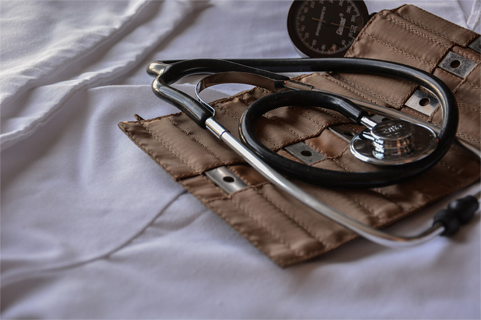
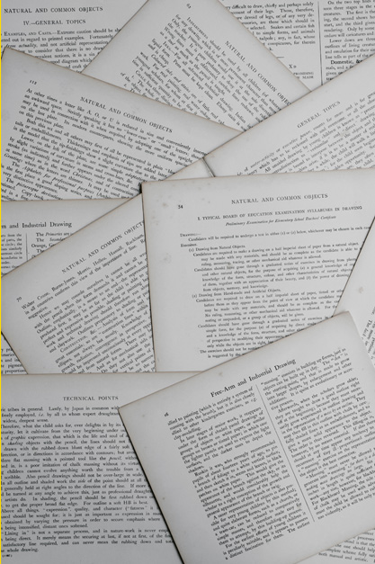

EXPERT INTERVIEW
남자 산부인과 의사의 삶
By Normal 2019.09.06-

His morning begins early in the.
그의 아침은 이른 시간에 시작된다. 하루는 24시간이다. 누구에게나 시간은 공평하게 주어진다. 전공의인 나에게도 하루는 24시간이다. 내가 전공의가 아닐 때도 하루는 24시간이었다. 같은 시간 속에 전혀 다른 하루들이 펼쳐진다.
-

Ceaseless Study for Life
뒤를 돌아보면 난 극심한 스트레스에 정신적, 또 육체적으로 무척이나 지쳐있었다. 하지만, 대부분은 20대 때에는 스트레스에 대해 깊게 알지 못한다. 나의 첫 번째 인턴 로테이션 지정 부서는 성형외과였다.
항상 30여 명정도 되는 환자들이 입원해 있는 바쁜 병동이었다. 게다가 매일 십여 명 정도의 환자들이 수술을 받았고 다른 전문의들이 보낸 환자들의 상담도 매일 5건 정도 있었다. 우리 팀의 목표는 항상 '완벽함'이었기 때문에 나 또한 언제나 앞서나가야 했다. 나는 새벽부터 밤 11시가 되어서야 하루 일과를 마칠 수 있었다.
-
The Wonder of
the Birth of Life아이의 첫 울음소리를 고고지성 또는 고고성이라 한다. 반면 아이가 처음으로 싸는 똥은 배내똥이라 불린다. 수정란이 약 41번의 세포 분열을 끝내고 만들어진 태아는 여태 탯줄로흘러든 피를 통해 산소와 영양분들을 얻었지만 이제 탯줄이잘렸으니 산소 공급이 차단된다.
그러면 숨이 차 오기 시작한다. 피 속에 이산화탄소가 늘어가는데 이젠 자기가 알아서 숨을 쉬어야 한다. 이것이 아기의 첫 울음소리다. 지축을 흔드는 고고지성(呱呱之聲)이 강하면 강할수록 건강한 아이다.
-
 The End of his Day
The End of his Day게으름은 즐겁지만 괴로운 상태다. 우리는 행복해지기 위해서 무엇인가 하고 있어야 한다. 저의 인생철학은 자신의 삶을 스스로 책임질 뿐만 아니라, 이 순간 최선을 다 하면 다음 순간에 최고의 자리에 오를 수 있다는 것 입니다. 게으름은 피곤하기 전에 쉬는 습관일 뿐.가장 위대한 영광은 한 번도 실패하지 않음이 아니라 실패할 때마다 다시 일어서는 데에 있다.인생에 있는 큰 비밀은 큰 비밀 따위는 없다는 것이다. 당신의 목표가 무엇이든열심히 할 의지가 있다면 달성할 수 있다. 성공한 사람보다는 가치 있는 사람이 되려 하라.